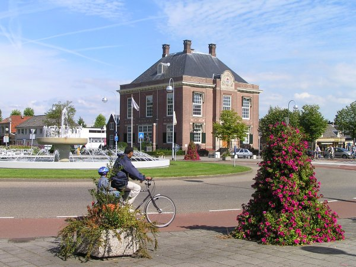
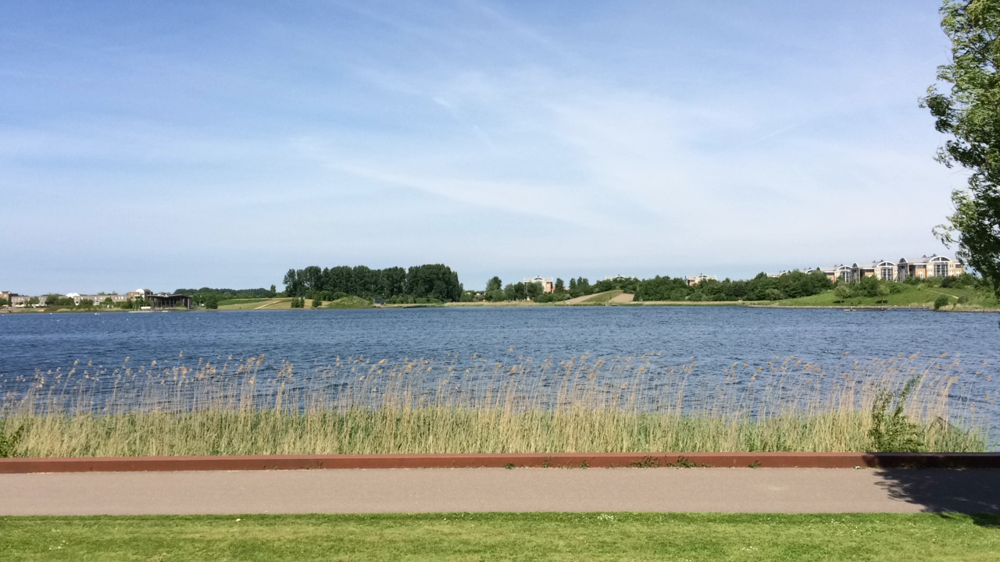
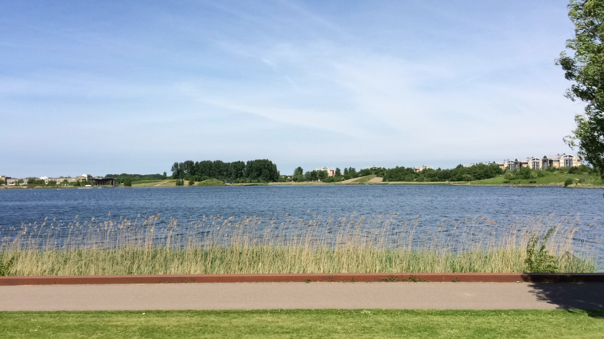

Hoofddorp is een redelijk groot dorp die op dit moment rond de 76.000 inwoners telt. Hoofddorp heeft veel leuke dingen om je dagen bezig te kunnen houden, zo is er de Toolenburgerplas waar mensen vaak grote rondes met hun honden lopen en je met goed weer kan zitten en nog een beetje een strandgevoel kan krijgen. Ook zijn er in Hoofddorp vaak nog evenementen en feesten die worden georganiseerd. Voorbeelden van dit zijn dingen zoals Mud Master, waar een grote groep mensen gezamenlijk een modderige en zware hindernisbaan probeert te overwinnen of bijvoorbeeld Meerlive, wat een wat kleinschaliger feest is in het centrum van hoofddorp, maar de grootste van alle blijft toch Mysteryland.
Mysteryland is het grootste elektronische muziekfestival in heel Nederland. Mysteryland wordt al jaren lang georganiseerd in hoofddorp. Er komen jaarlijks mensen van over de hele wereld om Mysteryland te bezoeken, wat laat zien hoe populair het zelfs buiten Nederland is. Mysteryland wordt vooral gepromoot via posters op straat en voor een heel groot deel via social media. Zo kunnen mensen met een groot bereik het festival promoten en zo veel mogelijk mensen over proberen te halen om ook te gaan.
 

Toolenburg is een van de zeven groten wijken die in Hoofddorp te vinden zijn. Toolenburg telt rond de 15.000 inwoners en is daarmee de op een na grootste wijk als je kijkt naar inwoners. Het aantal inwoners van Toolenburg zal waarschijnlijk ook snel gaan toenemen, gezien het feit dat er op dit moment meerdere nieuwe woonparken zoals het Tudorpark worden gebouwd. Hier komen dus een hoop nieuwe huizen waar gedurende de bouw van het park al mensen kunnen gaan wonen. Dit proces zal nog een paar jaar duren maar er zullen dus wel steeds meer mensen gaan wonen.
De wijk heeft ook zijn eigen kleine winkelcentrum, hoewel die niet groot is, zijn wel alle benodigde winkels aanwezig, eigenlijk is alles wat men nodig heeft te vinden. Het winkelcentrum heeft van alles, van supermarken en drogisterijen tot slagers en sushi-afhaalpunt, ze hebben zelfs een kapper en een reisbureau.
Wat waarschijnlijk toch wel het bekendst is in Toolenburg, is de Toolenburgerplas (door veel ook wel het meertje genoemd). De naam zegt het eigenlijk al, het is namelijk een klein meer waar eigenlijk van alles te doen is. Voor de hondenliefhebbers zijn er verschillende wandelroutes, die met of zonder hond gelopen kunnen worden en die uiteindelijk lijden tot een klein hondenstrandje. Op dat stuk kunnen mensen zitten en genieten van het weer en het water, terwijl hun honden de mogelijkheid hebben om rond te rennen en te spelen met andere honden. Er is ook een normaal strandje aanwezig voor iedereen die geen hond heeft en niet bij de honden wil zitten. Het normale strandje is ook nog voorzien van een kleine snackbar, die op de hetere en dus drukkere dagen opengaat en waar je van alles kunt halen. Rondom de plas zijn ook verschillende punten waar trainingstoestellen en veldjes staan voor mensen die met mooi weer liever buiten willen sporten in plaats van naar de sportschool gaan.
Verder staan er langs de plas nog twee eettentjes: Restaurant Long Island en Restaurant de Lieveling, waar men in de middag buiten aan het water kan zitten lunchen of ‘s avonds een hapje kan eten en kan genieten van het uitzicht over de plas.